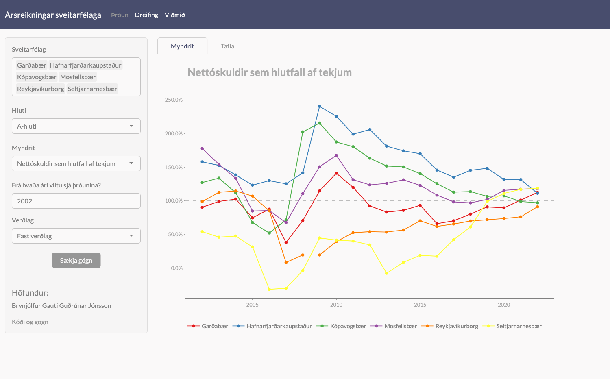
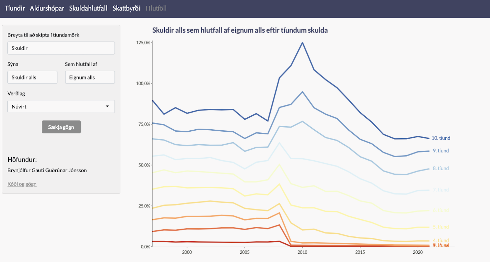
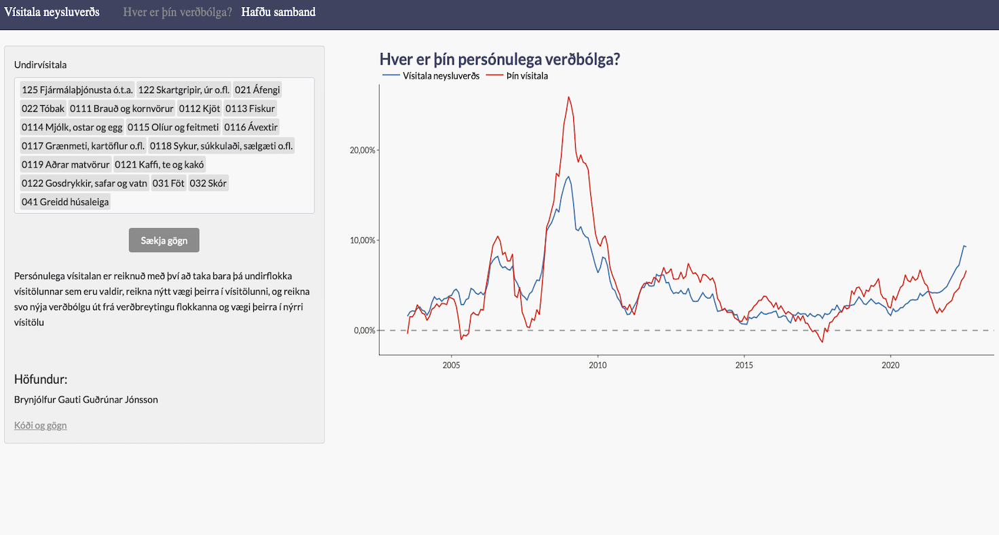

Fjármál sveitarfélaga
Gagnvirk samantekt á ársreikningum sveitarfélaga úr gögnum Sambands Íslenskra Sveitarfélaga

Eignir, skuldir og skattar
Gagnvirkt tól til að skoða eignir, tekjur og skuldir Íslendinga í skattframtalsgögnum Hagstofunnar

Verðbólga (í vinnslu)
Reiknaðu þína persónulega verðbólgu með þessari gagnvirku framsetningu á vísitölu neysluverðs